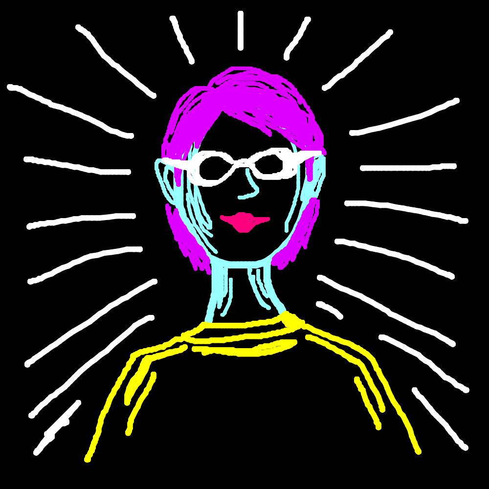
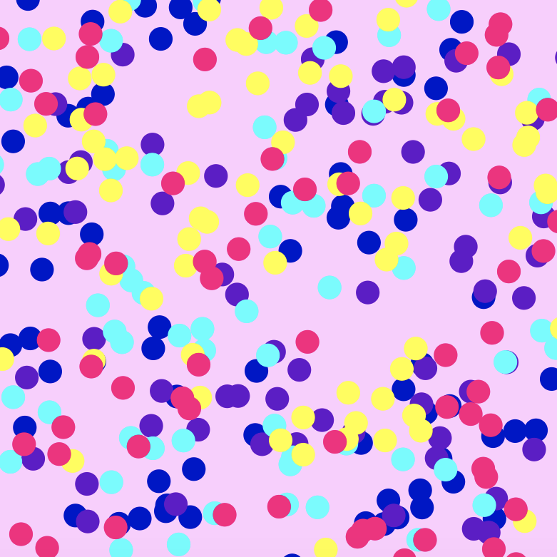
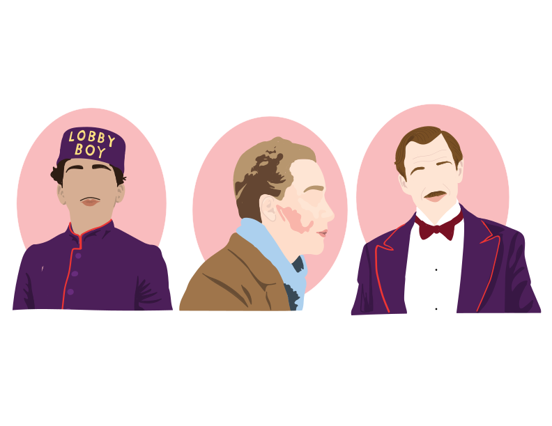
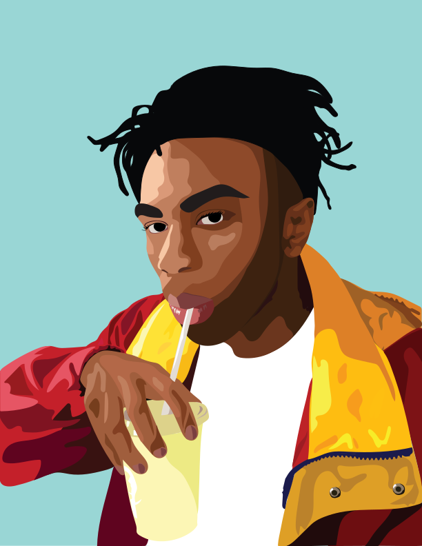
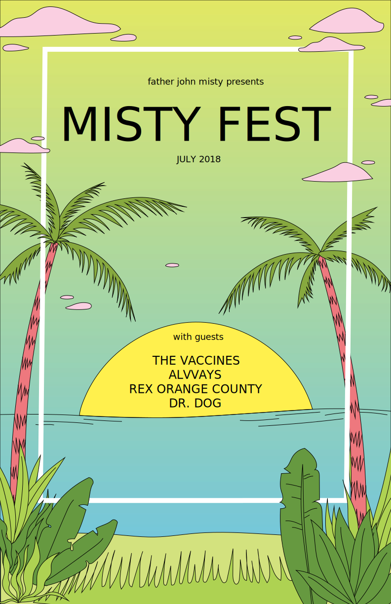
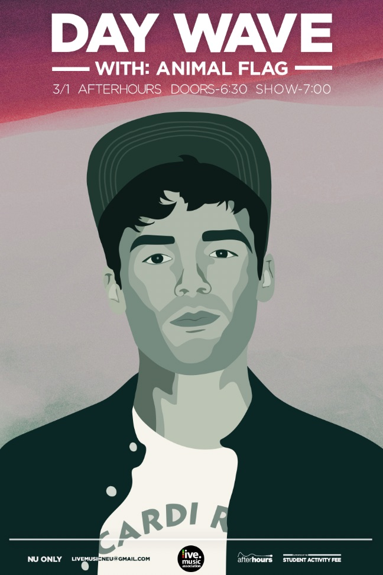

Sara Hartleben
Personal Portfolio
About Me
My name is Sara Hartleben, and I'm from Mount Kisco, New York.
I am currently a student at Northeastern University studying
Computer Science and Design. This is a portfolio for the work I created
throughout my freshman year.
Contact: sarahartleben@gmail.com
Programming Basics
This course is one of the requirements for the Design half of my combined major.
It focuses on basic programming design for user interfaces, primarily using p5,
which is the JavaScript version of a programming language called Processing.
Drawing App

One of the first assignments for this class was to make a drawing application, and then to draw a self portrait with it!
Game
For another few assignments, we focused on developping a game.
This is a game based on two others: Snake and Flappy Bird.
FJM Visualization
For our last individual assignment, I created a animated version of Father John Misty's
album cover for his song Real Love Baby, with the dots responding to the amplitude of that song.
Final Project
For the final project in this class, we were to work with a group to develop collaboratively.
My group, consisting of Elijah Cobb and Isa Diaz, created a game (similar to Geoguessr and
Pokemon Go) which allows the user to walk around while following hints within a preset story
that lead to new locations. We also started developing a feature to allow users to create their
own stories and hints.
2D Fundamentals
This course is the first art class offered at Northeastern.
In a studio workshop setting, we learned basic principles, language,
and concepts inherent in two-dimensional visual systems.

My final piece for this class was a painting in honor of my friend, Charlie, who passed away last year.
Acrylic and pen on Bristol board.
2D Tools
This one credit course is a corequisite for 2D Fundamentals.
It introduced me to design software such as Adobe Photoshop,
Illustrator, and InDesign.

For our first assignment in this course, we were to create 8 related images using Illustrator.
For our first assignment in this course, we were to create 8 related images using Illustrator.
These are a few of the 8 portraits I made of several characters from different Wes Anderson movies.

A vector portrait of Kevin Abstract made using Illustrator.

A collage made using Photoshop.

A festival poster made using both Illustrator and Photoshop.
Live Music Association
LMA is one of Northeastern's music industry clubs.
I joined their design team to help make posters to
promote
artists playing on campus along with
making posts
for several social media pages.
